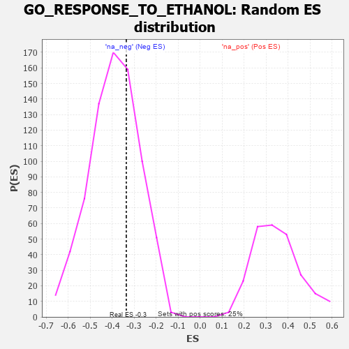

| | | Dataset | 7d |
| Phenotype | NoPhenotypeAvailable |
| Upregulated in class | na_neg |
| GeneSet | GO_RESPONSE_TO_ETHANOL |
| Enrichment Score (ES) | -0.335683 |
| Normalized Enrichment Score (NES) | -0.8609215 |
| Nominal p-value | 0.6715425 |
| FDR q-value | 0.9732525 |
| FWER p-Value | 1.0 |
Table: GSEA Results Summary
 Fig 1: Enrichment plot: GO_RESPONSE_TO_ETHANOL
Fig 1: Enrichment plot: GO_RESPONSE_TO_ETHANOL
Profile of the Running ES Score & Positions of GeneSet Members on the Rank Ordered List
| PROBE | GENE SYMBOL | GENE_TITLE | RANK IN GENE LIST | RANK METRIC SCORE | RUNNING ES | CORE ENRICHMENT | | 1 | SPI1 | | | 162 | 1.182 | 0.1361 | No |
| 2 | GLRA2 | | | 1892 | 0.321 | -0.0388 | No |
| 3 | DMAP1 | | | 2025 | 0.301 | -0.0156 | No |
| 4 | KCNC2 | | | 2075 | 0.295 | 0.0173 | No |
| 5 | FGFR2 | | | 2895 | 0.167 | -0.0635 | No |
| 6 | OGG1 | | | 3135 | 0.132 | -0.0761 | No |
| 7 | CBL | | | 3621 | 0.056 | -0.1297 | No |
| 8 | HTR1B | | | 3745 | 0.035 | -0.1405 | No |
| 9 | GLRA1 | | | 3957 | 0.001 | -0.1669 | No |
| 10 | UNC79 | | | 4184 | -0.039 | -0.1902 | No |
| 11 | EPS8 | | | 4474 | -0.088 | -0.2148 | No |
| 12 | GATA3 | | | 4614 | -0.120 | -0.2163 | No |
| 13 | DRD2 | | | 5088 | -0.221 | -0.2465 | Yes |
| 14 | PTEN | | | 5262 | -0.261 | -0.2337 | Yes |
| 15 | CDK1 | | | 5264 | -0.262 | -0.1992 | Yes |
| 16 | GRIN1 | | | 5381 | -0.291 | -0.1752 | Yes |
| 17 | G6PD | | | 5638 | -0.358 | -0.1601 | Yes |
| 18 | CASP8 | | | 5678 | -0.369 | -0.1161 | Yes |
| 19 | CDO1 | | | 5892 | -0.432 | -0.0857 | Yes |
| 20 | FYN | | | 7881 | -2.622 | 0.0113 | Yes |
Table: GSEA details [plain text format]

Fig 2: GO_RESPONSE_TO_ETHANOL: Random ES distribution
Gene set null distribution of ES for GO_RESPONSE_TO_ETHANOL